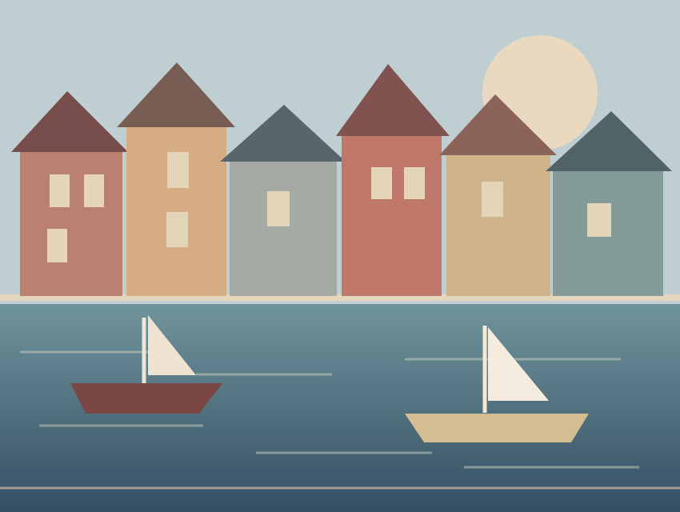
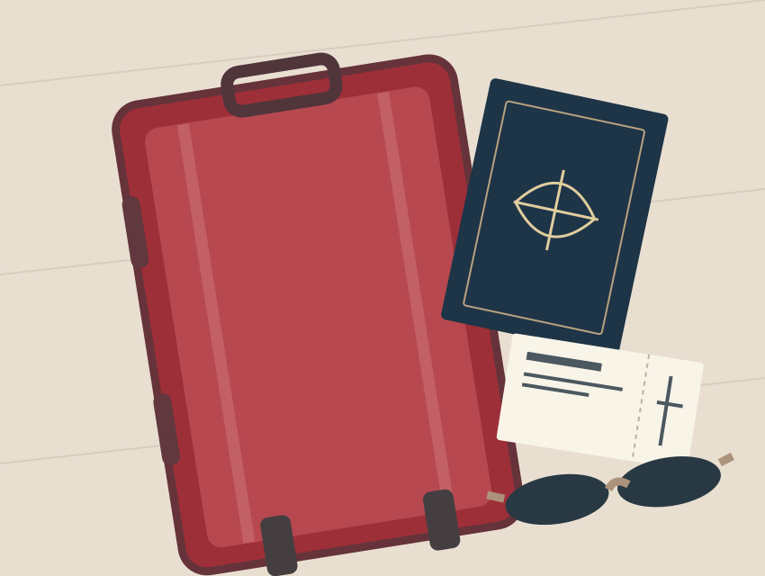

ERSCHEINT BALD48 Stunden Kopenhagen.
Wie kommst du vom Flughafen in die Stadt, was kostet ein Tag, und lohnt sich der Hafen auch bei Regen? Die Folge sagt es dir. Auch das, was nervt.
ERSCHEINT BALD—Knapp drei Stunden ab Zürich, die Uhr eine Stunde zurück, und dann liegt eine Stadt unter dir, die fast nur aus Hügeln besteht. Hier steht, was zwischen Landeanflug und erstem Abend auf dich wartet. Auch das, was nervt.
WeiterlesenJede Folge ein Reiseziel, vom Landeanflug bis zum ersten Abend. Mit Direktflug, Kosten pro Tag und dem, was nervt.

ERSCHEINT BALDWie kommst du vom Flughafen in die Stadt, was kostet ein Tag, und lohnt sich der Hafen auch bei Regen? Die Folge sagt es dir. Auch das, was nervt.
ERSCHEINT BALD—Was du beim Landen siehst, wie du vom Flughafen weiterkommst und was ein Tag dort wirklich kostet. Mit allem, was nervt.
ERSCHEINT BALD—
ERSCHEINT BALDWas gehört ins Handgepäck, und was kannst du zu Hause lassen? Dazu, was am Gate nervt, wenn der Koffer doch zu gross ist.
ERSCHEINT BALD—Wie sah dein Ziel bei der Landung aus? Poste dein Bild auf Instagram unter #meinFensterplatz. Egal, mit welcher Airline du geflogen bist. Ausgewählte Bilder zeigen wir unter dem passenden Artikel.
Die drei Bilder sind Beispiele aus dem Prototyp, keine Beiträge von Reisenden.
Meistens sieht Nora Lissabon nur durchs Fenster. Ein paar Mal im Jahr bleibt sie über Nacht. Was eine Flugbegleiterin mit 22 Stunden in einer Stadt anfängt, die sie schon hundertmal von oben gesehen hat.
WeiterlesenNora ist eine Figur im Schulkonzept.